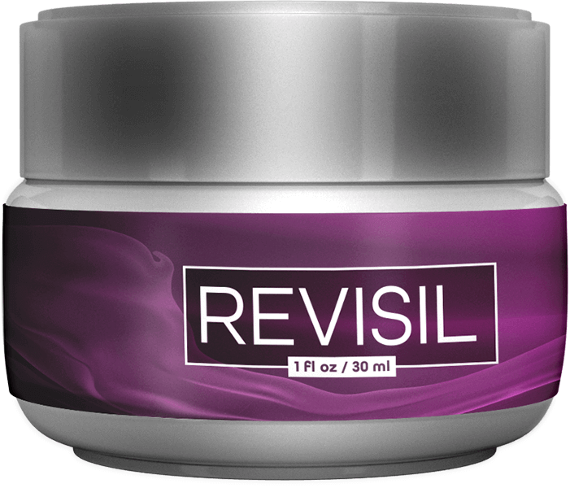
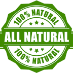
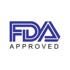

Revisil™
Revisil™ Only $49/Bottle - Limited Time Offer
Flat Sale ONLY For Today - Special Offer
Save Upto $300 + Special 50% OFF + 60 Day Money Back Guarantee
Save Upto $300 + Special 50% OFF + 60 Day Money Back Guarantee
 

Order TODAY And Save Up To $300!
Save Over 50%!
Save Over 50%!
Revisil keeps your skin healthy is especially to get the wrinkles and fine lines free and clear skin, with a multi-step procedure. Buy from Official Website.
The Formula is Easy to Take Each Day, and it Only Uses Natural Ingredients to Get the Desired Effect.
The Formula is Easy to Take Each Day, and it Only Uses Natural Ingredients to Get the Desired Effect.
Try Revisil For Over 50% OFF Today!
Regular Price: $99/per bottle
Only for: $49/per bottle

Why Choose Revisil

Made In The USA
Revisil is manufactured on US soil.

100% All Natural
All ingredients are pure, natural, and carefully sourced.

FDA Approved Facility
Revisil is manufactured according to the latest standards.
What is Revisil Supplement?
Revisil is a facial cream with Okinawan influences that slows down the aging process and decreases wrinkles and aging skin.
This cream comprises a natural, scientifically supported blend that has been shown in studies to keep your skin and body in better health.
This formula’s primary goal is to give your entire body and face a youthful, appealing appearance. It includes a natural anti-aging treatment that comes from the exotic and lovely island inhabitants to keep your body and skin in its healthiest state.
Each dab of this cream has potent anti-aging effects that can heal skin damage and increase freshness.
It protects your skin and body from invasive cosmetic procedures as well as costly and sometimes harmful surgery.
Your body and skin will heal naturally as a result, keeping their attractive natural appearance. With the initial dose, the natural ingredients begin to initiate themselves inside the epidermic layer of your skin.
Does It Really Work For Anti-Aging? This May Change Your Mind
This cream comprises a natural, scientifically supported blend that has been shown in studies to keep your skin and body in better health.
This formula’s primary goal is to give your entire body and face a youthful, appealing appearance. It includes a natural anti-aging treatment that comes from the exotic and lovely island inhabitants to keep your body and skin in its healthiest state.
Each dab of this cream has potent anti-aging effects that can heal skin damage and increase freshness.
It protects your skin and body from invasive cosmetic procedures as well as costly and sometimes harmful surgery.
Your body and skin will heal naturally as a result, keeping their attractive natural appearance. With the initial dose, the natural ingredients begin to initiate themselves inside the epidermic layer of your skin.
Does It Really Work For Anti-Aging? This May Change Your Mind
How Does Revisil Work?
In order to repair damaged and ageing skin, Revisil contains a combination of herbs, plants, vitamins, minerals, and other components.
Your skin is continuously at risk of harm as you age. Both the sun and airborne pollutants can harm your skin.
Your skin is impacted by your diet, exercise routine, and heredity.
Even if you follow all the appropriate procedures, you could eventually harm your skin.
This harm causes ageing symptoms like wrinkles, drooping skin, and a dulled radiance.
Revisil uses a combination of natural substances and cutting-edge skin care technologies to address these problems.
Together, these chemicals are said to be able to delay or even reverse many indications of ageing.
Simply apply Revisil to your skin every night to start experiencing its potent effects.
Your skin is continuously at risk of harm as you age. Both the sun and airborne pollutants can harm your skin.
Your skin is impacted by your diet, exercise routine, and heredity.
Even if you follow all the appropriate procedures, you could eventually harm your skin.
This harm causes ageing symptoms like wrinkles, drooping skin, and a dulled radiance.
Revisil uses a combination of natural substances and cutting-edge skin care technologies to address these problems.
Together, these chemicals are said to be able to delay or even reverse many indications of ageing.
Simply apply Revisil to your skin every night to start experiencing its potent effects.
Benefits of Revisil Supplement
The application of Revisil will make the skin look younger and healthier even after a few weeks of usage.
- It contains zero levels of potentially irritating chemicals.
- Natural ingredients are used in its production, making it highly useful for treating skin damage.
- It's great for the outer layer of skin, where it helps reduce skin problems.
- It works deeper within the skin's cells to revitalize them.
- Aging signs and acne scars are all gone after using this product.
- The skin looks healthier and younger as a result.
- It has the ability to stop the effects of aging in its users, making them appear 15 years younger.
- It helps restore suppleness to the skin and heals wounds inflicted by an unjust environment.
Limited Time Special Pricing - Act Now!
Secure Your Reserved Revisil While Stocks Last
Revisil Ingredients
Like most skin creams, Revisil is made up of a variety of different substances, including natural and artificial compounds, binders, fillers, bases, oils, and more. To combat the outward indications of ageing, Revisil's creators selected a unique combination of active components.
Revisil contains the following active ingredients:
Revisil contains the following active ingredients:
 Okinawan Fenugreek:
Okinawan Fenugreek: Due to its anti-aging qualities, it has traditionally been used in many products. On the Japanese island of Okinawa, it is found. It has saturating effects and rejuvenates the skin, keeping it taut and firm. It is also a more abundant source of vitamins, minerals, and nutrients including thiamine and folic acid, which are proven to protect against the effects of ageing and promote skin surface growth.
Retinol: It is one of the mixture's potent elements and is referred to as "the Sacred objective of combating maturing." It is frequently referred to as vitamin An and aids in the reduction of kinks and barely perceptible variances. It also repels very large open pores. Your skin has a smooth finish as a result.
Safflowers Seed Oil: Regular synthetics called thymoquinone are present in a certain type of oil. A typical oxidant adversary fights off free radicals, reduces irritability, and keeps your skin moisturised.
Vitamin E: L-ascorbic acid and Vitamin E are included in the required amount in the recipe. These are currently the greatest methods for reducing irritation and preventing cancer on a regular basis.
Vitamin D: Vitamin D is typically produced by your body when your skin is exposed to light. It plays a vital role in delivering anti-maturational effects, hormone production, and bolstering resistance.
Potassium: It is also indigenous to the Japanese island of Okinawa and is regarded as a distinctive skin cream. It aids in cell renewal, provides your skin a youthful shine, and protects it from damage from the outside.
Shea Spread: It has been incorporated into the mixture to create the recipe's base. It has advanced anti-oxidant and anti-aging capabilities. It contains corrosive linoleic acid to saturate the skin and increase security from unrestrained revolutionaries. Additionally, it has a significant amount of oleic unsaturated fats, which enhance the skin's ability to block substances. It is also known that collagen production is increasing.
Tilia Cordata Bloom Concentrate: It is a well-known antibacterial and relaxing component with beneficial effects on skin shaping. It also has a distinctive aroma that, when applied to the skin, has a light moderating effect. Along with preventing further damage, it can also treat free radicals' damage to your skin and hair.
Sage leaf extricate: Treatments, oils, and creams often use a certain type of component. It largely reduces the risk of dermatitis and psoriasis and works on skin that is prone to skin irritation.
60-DAYS 100% MONEY-BACK GUARANTEE
Revisil will be available for you to test out for TWO months. You can apply for our FULL refund if you are among the 0.5% who are not satisfied.
Consider this a trial run in case things don't go your way. Revisil may work. If it doesn't, you can ask for your money back.
Get your Revisil bottle and see for yourself.
Revisil Targets Telomerase for Anti-Aging Benefits A protein in your body called telomerase is the focus of several anti-aging lotions.
This protein, which is essential for safeguarding your telomeres, is the target of Revisil's action.
Your skin cells are protected by telomeres like armour. Your skin cells' telomeres shield them from harm so they can keep replicating throughout time. However, as you age, your telomere activity declines and your telomeres' protective ability deteriorates, which results in outward indicators of ageing.
Your skin becomes less elastic and saggier when you have a telomere deficiency.
It could make wrinkles and fine lines more noticeable.
The natural components in Revisil were specifically chosen by the product's creators to boost the development of telomerase and thereby target telomere health.
For instance, some of the substances fight inflammation, which facilitates proper telomere activity.
A protein in your body called telomerase is the focus of several anti-aging lotions.
This protein, which is essential for safeguarding your telomeres, is the target of Revisil's action.
Your skin cells are protected by telomeres like armour. Your skin cells' telomeres shield them from harm so they can keep replicating throughout time. However, as you age, your telomere activity declines and your telomeres' protective ability deteriorates, which results in outward indicators of ageing.
Your skin becomes less elastic and saggier when you have a telomere deficiency.
It could make wrinkles and fine lines more noticeable.
The natural components in Revisil were specifically chosen by the product's creators to boost the development of telomerase and thereby target telomere health.
For instance, some of the substances fight inflammation, which facilitates proper telomere activity.
This protein, which is essential for safeguarding your telomeres, is the target of Revisil's action.
Your skin cells are protected by telomeres like armour. Your skin cells' telomeres shield them from harm so they can keep replicating throughout time. However, as you age, your telomere activity declines and your telomeres' protective ability deteriorates, which results in outward indicators of ageing.
Your skin becomes less elastic and saggier when you have a telomere deficiency.
It could make wrinkles and fine lines more noticeable.
The natural components in Revisil were specifically chosen by the product's creators to boost the development of telomerase and thereby target telomere health.
For instance, some of the substances fight inflammation, which facilitates proper telomere activity.
What are the upsides of Revisil?
The use of Revisil will make your skin look more youthful and better even following half a month of utilization.
It is 100 percent liberated from any pollutants and poisons hurtful to the skin.
It is made with all plant concentrates and medicinal ointments that are really compelling for harmed skin.
It helps lower pigmentation, dryness, and dim spots from the upper layer of your skin.
It enters further into the skin cells and triggers cell restoration.
It totally destroys the almost negligible differences, kinks, and skin inflammation scars from your skin.
It carries an energetic gleam to the skin that makes your skin more brilliant.
It can turn around the maturing system and you will begin looking 15 years more youthful than your age.
It likewise fixes the harm brought about by an out of line climate and improves skin versatility.
It is 100 percent liberated from any pollutants and poisons hurtful to the skin.
It is made with all plant concentrates and medicinal ointments that are really compelling for harmed skin.
It helps lower pigmentation, dryness, and dim spots from the upper layer of your skin.
It enters further into the skin cells and triggers cell restoration.
It totally destroys the almost negligible differences, kinks, and skin inflammation scars from your skin.
It carries an energetic gleam to the skin that makes your skin more brilliant.
It can turn around the maturing system and you will begin looking 15 years more youthful than your age.
It likewise fixes the harm brought about by an out of line climate and improves skin versatility.
Revisil Reviews: What Do Customers Have to Say?
Customers who have reaped major benefits from the formula have left a wealth of favourable testimonials on the official Revisil.com website.
Customers and confirmed buyers of Revisil have provided the following feedback:
After using Revisil for a short period of time, one customer claimed the lines on her forehead "vanished." A "natural lift" that gradually improved over time was also something she observed in her eyes.
Another client used Revisil continuously and within a few weeks could see a noticeable improvement. She had fewer creases around her mouth, and her wrinkles had smoothed out. As a "life saver," she calls the formula.
One reviewer, who is 66 years old, claimed that Revisil has made her seem 40 years younger. Her fine lines are invisible, and the appearance of her wrinkles has lessened since her skin is radiant and nourished.
One 54-year-old client reports that after using the solution consistently for a few weeks, she feels 45, and she is even more eager to see how she will appear in a few months.
Customers frequently compliment Revisil for its low cost, appealing packaging, and excellent customer support.
The skin looks better than it has in the past ten years, according to one confirmed consumer.
Revisil, according to other clients, has allegedly made their wrinkles and lines vanish.
Overall, most consumers concur that the mixture does what it promises to do, which is to get rid of wrinkles and other obvious symptoms of ageing within weeks. In reality, according to the manufacturer, over 78,000 units have been sold to date, with the majority of customers giving feedback similar to those in the previous list.
Customers and confirmed buyers of Revisil have provided the following feedback:
After using Revisil for a short period of time, one customer claimed the lines on her forehead "vanished." A "natural lift" that gradually improved over time was also something she observed in her eyes.
Another client used Revisil continuously and within a few weeks could see a noticeable improvement. She had fewer creases around her mouth, and her wrinkles had smoothed out. As a "life saver," she calls the formula.
One reviewer, who is 66 years old, claimed that Revisil has made her seem 40 years younger. Her fine lines are invisible, and the appearance of her wrinkles has lessened since her skin is radiant and nourished.
One 54-year-old client reports that after using the solution consistently for a few weeks, she feels 45, and she is even more eager to see how she will appear in a few months.
Customers frequently compliment Revisil for its low cost, appealing packaging, and excellent customer support.
The skin looks better than it has in the past ten years, according to one confirmed consumer.
Revisil, according to other clients, has allegedly made their wrinkles and lines vanish.
Overall, most consumers concur that the mixture does what it promises to do, which is to get rid of wrinkles and other obvious symptoms of ageing within weeks. In reality, according to the manufacturer, over 78,000 units have been sold to date, with the majority of customers giving feedback similar to those in the previous list.
Limited Time Special Pricing - Act Now!
Secure Your Reserved Revisil While Stocks Last
WARNING: Stock levels of Revisil are limited Accept your reserved bottle above NOW before your discount expires.
Revisil Frequently Asked Questions
How Many Bottle Should I Order?
Revisil is best used for at least 3 to 6 months to achieve the best results. This will ensure you reach your goals. Revisil can be purchased monthly, but we recommend you buy Revisil 3 to 6 Bottle as we offer discounts and that's the minimum amount you need to see results. You should note that this discount is not available year-round. So take advantage of it while you can.
Is Revisil Safe?
Revisil contains 100% natural and safe ingredients. It is therefore completely safe, effective, and natural. Revisil is used daily by thousands of people. There have been no reported side effects. Revisil are made in the USA at our FDA-approved, GMP-certified facility. We adhere to the highest standards. It is 100% natural, vegetarian, and non-GMO. Before using, consult your doctor if you have any medical conditions.
How Will Revisil Be Shipped To Me And How Quickly?
You can expect your order to be shipped within 5-7 business day if you live in the United States of America or Canada. Orders from outside the USA or Canada typically take between 8-15 business days (+ customs clearance). Delivery times may be affected by the Covid-19 pandemic. We will deliver your order to your office or home using a premium carrier like FedEx or UPS.
Is Revisil Aproved By The FDA?
Revisil is manufactured in the USA by our FDA-approved, GMP-certified facility. We adhere to the highest standards.
Does Revisil really work?
Yes. It’s scientifically proven.Not only have double blind tests and research been performed over the years...But Revisil is also backed by research from top institutes and Universities across the world. Brown University, Mayo Clinic, University of Miami and Columbia University and dozens of other top scientific resources.And if you scroll back up, you’ll see plenty of peer-reviewed scientific research, and testimonials on how beneficial and powerful Revisil is.
How can I buy Revisil Supplement?
Revisil is available through revisil-com.com Official Website. For a limited time, they offer three discounted packages: Basic bottle - $69 Per Bottle.
Don't Wait Any Longer! Order Your Discounted bottle Now!
Regular Price: $99/per bottle
Only for: $49/per bottle
Copyright © 2022 - Revisil
FDA Compliance
All content and information found on this page are for informational purposes only and are not intended to diagnose, treat, cure or prevent any disease. The FDA hasn't evaluated the statements provided on this page. Make sure you consult with a licensed doctor before taking any supplement or making any changes to your diet or exercise plan. Individual results may vary.
The display of third-party trademarks and trade names on this site does not necessarily indicate any affiliation or ndorsements of our website. If you click a merchantlink and buy a product or service on their website, we may be paid a fee by he merchant.